Recorridos · Prologo_UltimaNoche
Cada personaje con su color; un punto cada 2 s (con el segundo cada 10 s); los conos son las cámaras con su número de plano.
1. @inicio · 0:00,0 – 0:16,1
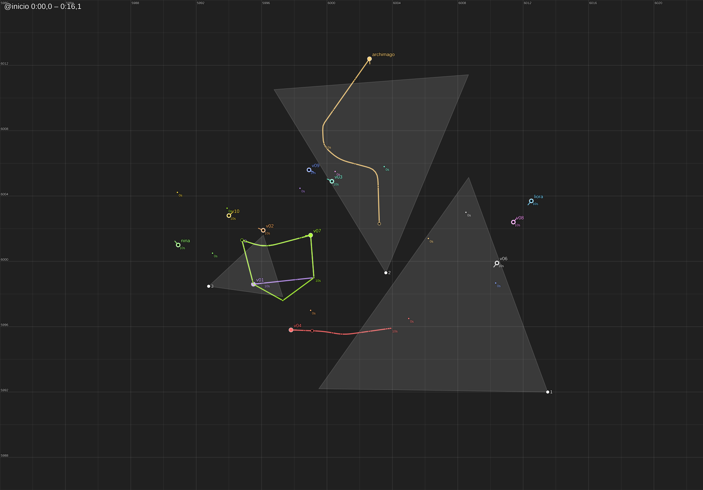
2. @saludo · 0:16,1 – 0:33,0
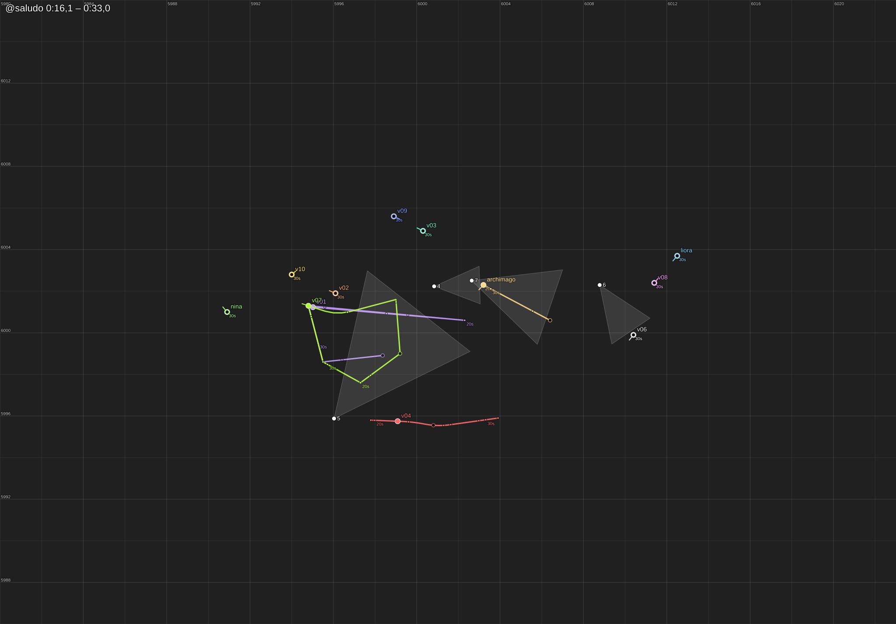
3. @carreta_magia · 0:33,0 – 0:46,6
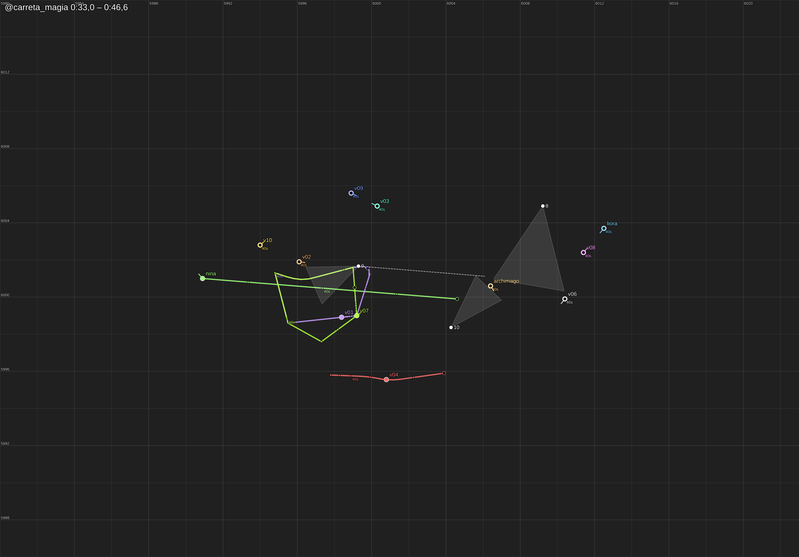
4. @globo_sube · 0:46,6 – 0:57,2
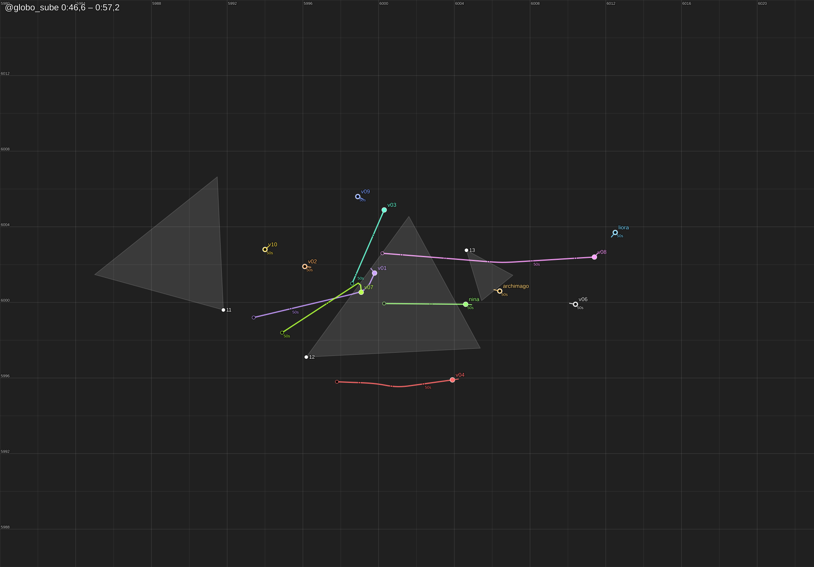
5. @rio · 0:57,2 – 1:16,5
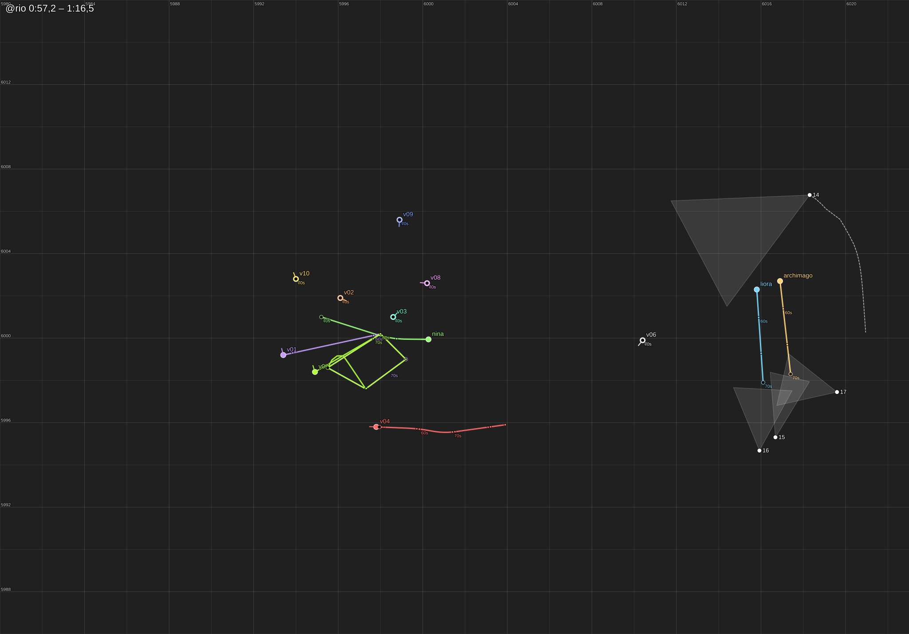
6. @cielo · 1:16,5 – 1:32,2
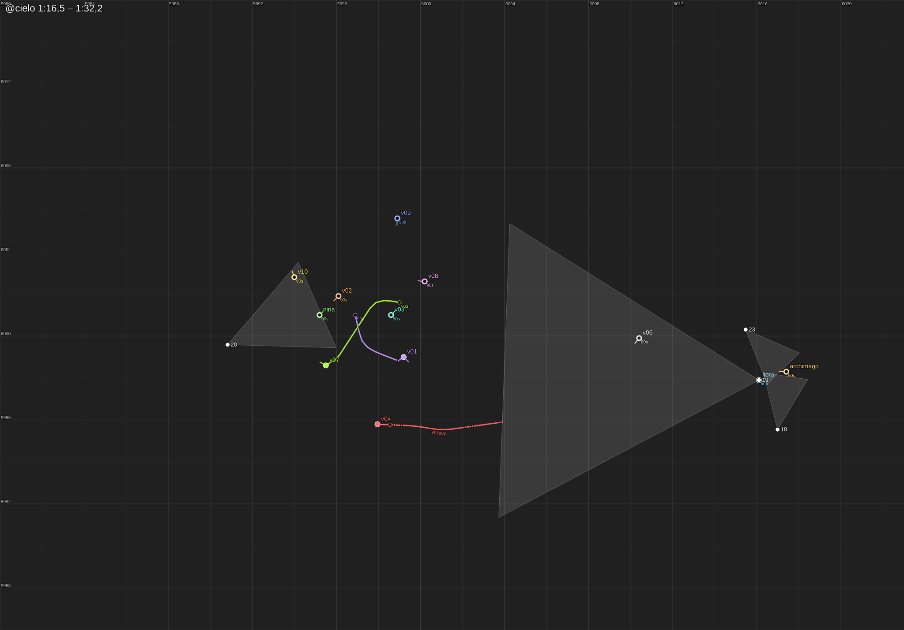
7. @evacuar · 1:32,2 – 1:59,3
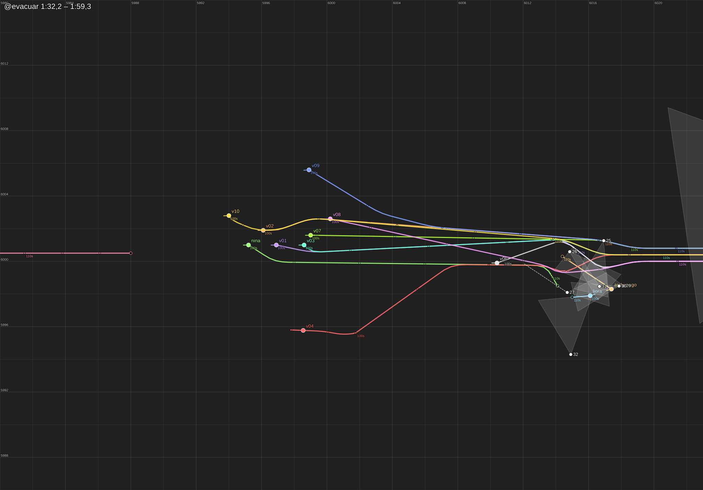
8. @acercan · 1:59,3 – 2:09,6
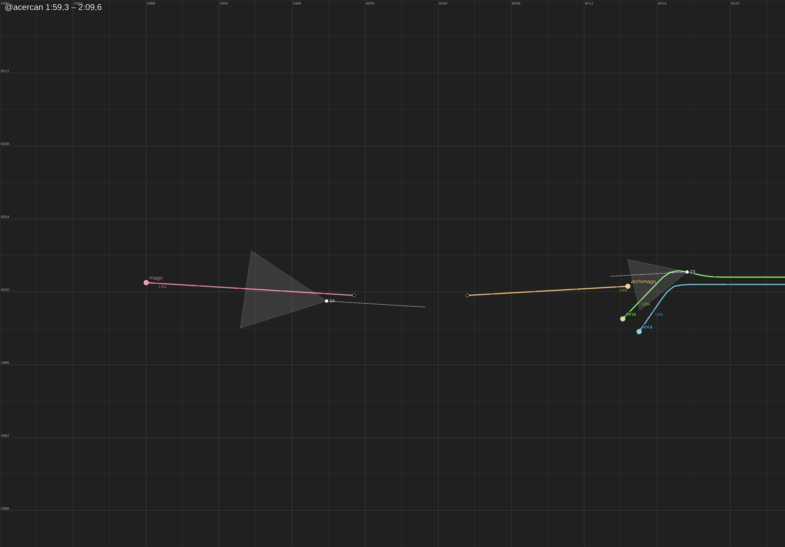
9. @duelo · 2:09,6 – 2:24,6
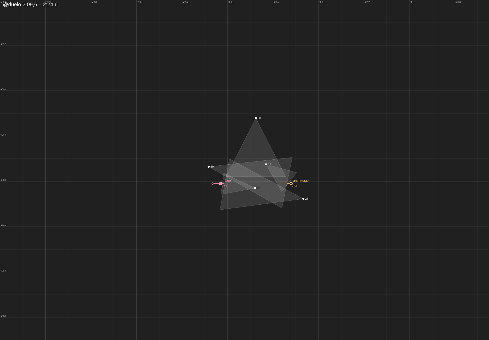
10. @choque · 2:24,6 – 3:41,1
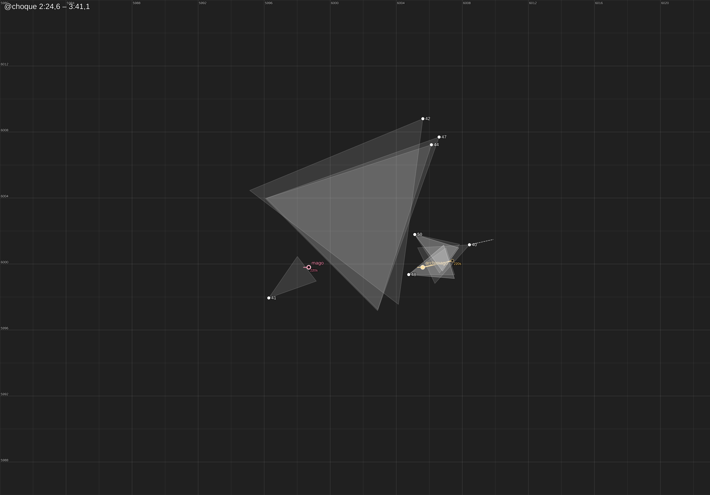
11. @hechizo · 3:41,1 – 3:53,0
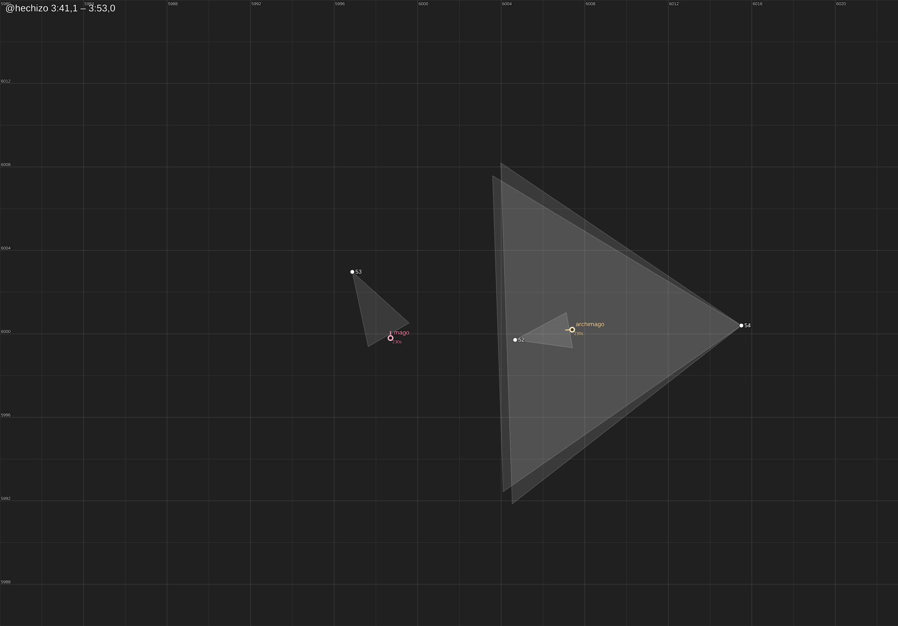